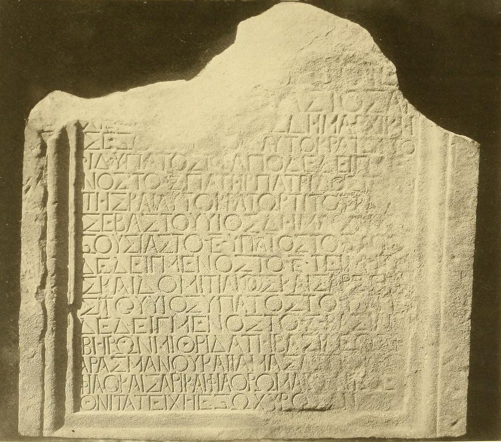

ვესპასიანეს წარწერაStele of Vespasian
ვესპასიანეს წარწერა
Stele of Vespasian
შინაარსი / Summary
საამშენებლო-შეწირვითი
კრიტიკული გამოცემა Interpretive Edition
Αὐτοκράτωρ Καῖσαρ Οὐε σ -
πασιανός σεβαστός ἀρ -
χιε ρεύς μέγιστος δημαρχικῆ -
ς ἐξο υσίας τὸ Ζ αὐτοκράτ ωρ τὸ
5ῘΔ ὕπατος τὸ Ҁ ἀποδεδειγμέ -
νος τὸ Ζ πατήρ πατρίδος τ ειμη -
σεβαστοῦ υἱός δημαρχικῆς ἐ -
ξουσίας τὸ Ē ὕπατος τὸ Δ ἀπο -
10δεδειγμένος τὸ Ē τιμητή -
στοῦ υἱός ὕπατος τὸ Γ ἀπο -
δεδειγμένος τὸ Δ βασιλεῖ
15αρασμάνου καὶ Ἰαμασασποΐ υἱῷ
φιλοκαίσαρι καὶ φιλορωμαίῳ καὶ ἔ -
θν ει τὰ τείχη ἐξωχύρωσαν
დიპლომატიური გამოცემა Diplomatic Edition
ΑΥΤΟΚΡΑΤΩΡ ΚΑΙΣΑΡ ΟΥΕ Σ
ΠΑΣΙΑΝΟΣ ΣΕΒΑΣΤΟΣ ΑΡ
ΧΙΕ ΡΕΥΣ ΜΕΓΙΣΤΟΣ ΔΗΜΑΡΧΙΚΗ
Σ ΕΞΟ ΥΣΙΑΣ ΤΟ Ζ ΑΥΤΟΚΡΑΤ ΩΡ ΤΟ
5ῘΔ ΥΠΑΤΟΣΤΟ Ҁ ΑΠΟΔΕΔΕΙΓΜΕ
ΝΟΣ ΤΟ Ζ ΠΑΤΗΡ ΠΑΤΡΙΔΟΣ Τ ΕΙΜΗ
ΤΗΣΚΑΙ ΑΥΤΟΚΡΑΤΩΡ ΤΙΤΟΣ ΚΑΙΣΑΡ
ΣΕΒΑΣΤΟΥ ΥΙΟΣ ΔΗΜΑΡΧΙΚΗΣ Ε
ΞΟΥΣΙΑΣ ΤΟ Ē ΥΠΑΤΟΣ ΤΟ Δ ΑΠΟ
10ΔΕΔΕΙΓΜΕΝΟΣ ΤΟ Ē ΤΙΜΗΤΗ
ΣΚΑΙ ΔΟΜΙΤΙΑΝΟΣ ΚΑΙΣΑΡ ΣΕΒΑ
ΣΤΟΥ ΥΙΟΣ ΥΠΑΤΟΣ ΤΟ Γ ΑΠΟ
ΔΕΔΕΙΓΜΕΝΟΣΤΟ Δ ΒΑΣΙΛΕΙ
ΙΒΗΡΩΝ ΜΙΘΡΙΔΑΤΗ ΒΑΣΙΛΕΩΣ Φ
15ΑΡΑΣΜΑΝΟΥΚΑΙ ΙΑΜΑΣΑΣΠΟΙ ΥΙΩ
ΦΙΛΟΚΑΙΣΑΡΙΚΑΙ ΦΙΛΟΡΩΜΑΙΩΚΑΙ Ε
ΘΝ ΕΙ ΤΑ ΤΕΙΧΗ ΕΞΩΧΥΡΩΣΑΝ

Plaque from Mtskheta, 1867
{'default': 'თვითმპყრობელმა კეისარმა ვესპასიანე სევასტოსმა, \n დიდმა ქურუმთმთავარმა, შვიდჯერ ტრიბუნის ხელისუფლებით აღჭურვილმა, თოთხმეტჯერ თვითმპყრობლად (არჩეულმა), \n ექვსჯერ ჳპატოსმა, მეშვიდედ გამოცხადებულმა, სამშობლოს მამამ და ცენზორმა და თვითმპყრობელმა ტიტუს კეისარმა, სევასტოსის ძემ, \n ხუთჯერ ტრიბუნის ხელისუფლებით აღჭურვილმა, \n ოთხჯერ ჳპატოსმა, მეხუთედ გამოცხადებულმა, ცენზორმა და დომიციანე კეისარმა, \n სევასტოსის ძემ, სამჯერ ჳპატოსმა, მეოთხედ გამოცხადებულმა, იბერთა მეფეს, \n მითრიდატეს მეფე ფარსმანისა და იამაზასპუჰის ძეს, კეისრის მეგობარსა და რომაელთა მოყვარულს, და ხალხს ეს კედლები გაუმაგრეს. Imperator Caesar Vespasianus Augustus, pontifex maximus, holding the tribunician power for the seventh time, imperator for the fourteenth time, consul for the sixth time, and designated for the seventh, father of the fatherland, censor and imperator Titus Caesar, son of Augustus, holding the tribunician power for the fifth time, consul for the fourth time and designated for the fifth, censor, and Domitianus Caesar, son of Augustus, consul for the third time and designated for the fourth, for the king of the Iberians, Mithridates, son of King Pharasmanes, and Amazaspus, friend of Caesar and of the Romans, and for his people [Iberians] they [Romans] fortified the walls.'}
{'default': 'ასოთა მოხაზულობა (სწორი ბუნების პატარა, სამკუთხედის ფორმის ჩაღრმავებით დამთავრება, α-ს ჩატეხილი შუა ხაზი, ε, η და θ-ს ჰორიზონტალური ხაზის მგივრად მცირე, წერტილზე ოდნავ გრძელი ნიშნები, Σ, Ω და Ξ-ს მოხაზულობა) და ენობრივი მონაცემები \n (იშვიათი იტაციზმი εθνι, τειμητης; ერთი შემთხვევა ο║ω-ს აღრევისა - αυτοκρατορ - IV სტრიქონში) ჩვეულებრივია I-ს-ის წარწერისათვის ყველგან სადაც ბერძნული წერა იციან.\n \n ბერძნული ტექსტის XV სტრიქონის ერთი სიტყვა - Ἰαμασασποΐ სხვადასხვაგვარად არის წაკითხული სხვადასხვა სპეციალისტის მიერ:\n უფრო ადრინდელი გამომცემლები (ი. ბარტოლომეი, J. Mohl-ი, ვ. ლატიშევი) მას კითხულობდნენ Ιαμασδει (და ეს მიჩნეული იყო ქალის სახელად) τω υιω, ლ. რენÁე და ი. პომიალოვსკი - Ιαμασδαιτων, რაც ნიშნავდა "ამაზდას (ე. ი. არმაზის) მცხოვრებთ".\n ა. ამირანაშვილი კითხულობდა Ιαμασπω რაც =Ιαμασασπω. ა. ამირანაშვილის (ბოლტუნოვას) ეს წაკითხვა გ. წერეთლის შრომის გამოქვეყნებამდე მიღებული იყო (მ. ნ. ტოდი; თ. ყაუხჩიშვილი), მხოლოდ "Áამასასპის" (რაც მამაკაცის სახელად იყო მიჩნეული) პიროვნების'}
<div type="edition" xml:lang="ka" ana="mtavruli" xml:space="preserve">
<ab>
<lb n="1"/><w lemma="ქრისტე"><expan><abbr>ქ</abbr><ex>რისტ</ex><abbr>ე</abbr></expan></w>
<w lemma="განსუენება"><expan><abbr>გა</abbr><ex>ნ</ex><abbr>ო</abbr><ex>ჳ</ex><abbr>ს</abbr><ex>უ</ex><abbr>ენე</abbr></expan></w>
<w lemma="სულ">სოჳ<lb n="2" break="no"/>ლსა</w>
<name nymRef="ვაჩა">ვაჩაჲს<lb n="3" break="no"/>ასა</name>
<name nymRef="გურა"><expan><abbr>გო</abbr><ex>ჳ</ex><abbr>რაჲ<lb n="4" break="no"/>სასა</abbr></expan></name>
<name nymRef="მირა"><expan><abbr>მ</abbr><ex>ი</ex><abbr>რა</abbr><ex>ჲ</ex><abbr>ს</abbr><ex>ა</ex><abbr>ს</abbr><ex>ა</ex></expan></name>
</ab>
</div>